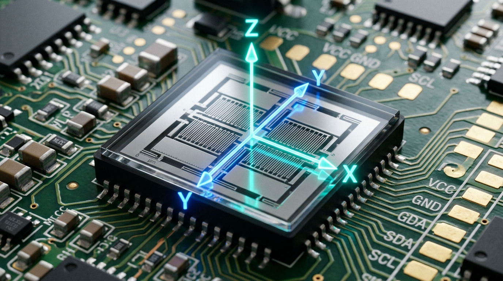

BÀI 8: CHUYỂN ĐỘNG BIẾN ĐỔI. GIA TỐC
1. Chuyển động biến đổi trong thực tế
Trong chương trước, khái niệm chuyển động thẳng đều đã được làm quen với vận tốc không đổi theo thời gian. Tuy nhiên, phần lớn chuyển động trong tự nhiên và công nghệ là chuyển động có vận tốc biến thiên.
Định nghĩa: Chuyển động có vận tốc thay đổi theo thời gian được gọi là chuyển động biến đổi.
Vận tốc là một đại lượng vectơ gồm cả độ lớn (tốc độ) và hướng (phương, chiều). Do đó, sự biến đổi của vận tốc có thể xảy ra theo một trong ba trường hợp sau:
- Chỉ thay đổi về độ lớn: Vật chuyển động trên quỹ đạo thẳng nhưng tốc độ tăng dần (chuyển động nhanh dần) hoặc tốc độ giảm dần (chuyển động chậm dần). Ví dụ: Xe ô tô tăng tốc trên đường thẳng khi đèn tín hiệu giao thông chuyển sang màu xanh.
- Chỉ thay đổi về hướng: Vật chuyển động với độ lớn vận tốc không đổi nhưng phương chiều liên tục thay đổi theo quỹ đạo cong. Ví dụ: Xe máy đi qua khúc cua tròn với tốc độ kế giữ nguyên $40\text{ km/h}$.
- Thay đổi đồng thời cả độ lớn và hướng: Vận tốc vừa biến đổi về tốc độ vừa đổi phương chiều. Ví dụ: Chuyển động của quả bóng được sút bay bổng trong không gian.
2. Khái niệm và công thức tính gia tốc
Để đánh giá mức độ biến đổi của vận tốc nhanh hay chậm theo thời gian, đại lượng gia tốc được định nghĩa trong cơ học.
Định nghĩa gia tốc: Gia tốc là đại lượng vật lí đặc trưng cho sự thay đổi nhanh hay chậm của vận tốc theo thời gian.
Hướng dẫn tương tác: Kéo thanh trượt để điều chỉnh gia tốc $a$ của ô tô ($a > 0$: ô tô tăng tốc nhanh dần; $a < 0$: ô tô hãm phanh chậm dần). Quan sát mối quan hệ về hướng giữa vectơ vận tốc $\vec{v}$ (màu xanh lục) và vectơ gia tốc $\vec{a}$ (màu cam) trên xe.
a) Công thức tính gia tốc trung bình
Giả sử tại thời điểm $t_1$ vật có vận tốc là $v_1$, đến thời điểm $t_2$ vật có vận tốc là $v_2$. Trong khoảng thời gian $\Delta t = t_2 - t_1$, độ biến thiên vận tốc của vật là $\Delta v = v_2 - v_1$.
Gia tốc trung bình của vật trong khoảng thời gian $\Delta t$ được xác định theo công thức:
b) Đơn vị của gia tốc trong hệ SI
Trong hệ đơn vị quốc tế SI:
- Độ biến thiên vận tốc $\Delta v$ có đơn vị là mét trên giây ($\text{m/s}$).
- Khoảng thời gian $\Delta t$ có đơn vị là giây ($\text{s}$).
- Đơn vị của gia tốc là mét trên giây bình phương, ký hiệu là $\mathbf{\text{m/s}^2}$ (hoặc $\text{m}\cdot\text{s}^{-2}$).
Ý nghĩa vật lí: Gia tốc có giá trị bằng $a = 3\text{ m/s}^2$ cho biết trong mỗi khoảng thời gian 1 giây, vận tốc của vật biến đổi một lượng bằng $3\text{ m/s}$.
c) Gia tốc tức thời
Khi xét khoảng thời gian $\Delta t$ vô cùng nhỏ tiến dần về 0 ($\Delta t \to 0$), đại lượng $\frac{\Delta v}{\Delta t}$ đặc trưng cho sự biến thiên vận tốc tại một thời điểm xác định và được gọi là gia tốc tức thời.
3. Vectơ gia tốc và mối quan hệ với vectơ vận tốc
Vì vận tốc là một đại lượng vectơ nên gia tốc cũng là một đại lượng vectơ. Vectơ gia tốc đặc trưng cho sự thay đổi cả về độ lớn và hướng của vectơ vận tốc theo thời gian.
Vectơ gia tốc $\vec{a}$ có các đặc điểm hình học sau:
- Gốc: Đặt tại vật chuyển động.
- Hướng: Trùng với hướng của vectơ độ biến thiên vận tốc $\Delta \vec{v} = \vec{v}_2 - \vec{v}_1$.
- Độ dài (độ lớn): Tỉ lệ với độ lớn của gia tốc theo một tỉ xích quy ước: $a = \frac{|\Delta v|}{\Delta t}$.
Quy tắc xác định dấu và hướng trong chuyển động thẳng
Xét một vật chuyển động trên đường thẳng dọc theo trục tọa độ $Ox$. Khi chọn một chiều dương xác định cho trục tọa độ:
| Loại chuyển động | Quan hệ hướng vectơ | Dấu đại số | Ý nghĩa vật lí |
|---|---|---|---|
| Chuyển động thẳng nhanh dần | $\vec{a}$ cùng hướng với $\vec{v}$ ($\vec{a} \uparrow\uparrow \vec{v}$) | $a \cdot v > 0$ | Gia tốc và vận tốc cùng dấu ($a > 0, v > 0$ hoặc $a < 0, v < 0$). |
| Chuyển động thẳng chậm dần | $\vec{a}$ ngược hướng với $\vec{v}$ ($\vec{a} \uparrow\downarrow \vec{v}$) | $a \cdot v < 0$ | Gia tốc và vận tốc trái dấu ($a < 0, v > 0$ hoặc $a > 0, v < 0$). |
| Chuyển động thẳng đều | $\vec{a} = \vec{0}$ | $a = 0$ | Vận tốc không đổi theo thời gian ($\Delta v = 0$). |
Lưu ý phân biệt quan trọng:
Dấu của gia tốc $a$ (dương hay âm) phụ thuộc vào việc lựa chọn chiều dương của hệ quy chiếu. Do đó, gia tốc mang giá trị âm ($a < 0$) chưa đủ để khẳng định vật chuyển động chậm dần. Tính chất nhanh dần hay chậm dần phải được xác định thông qua dấu của tích số $a \cdot v$.
4. Đồ thị vận tốc – thời gian $(v - t)$ và ý nghĩa của độ dốc
Đồ thị vận tốc – thời gian (đồ thị $v - t$) biểu diễn sự phụ thuộc của giá trị vận tốc $v$ vào thời gian $t$ trên hệ trục tọa độ vuông góc $Ovt$ (trục tung biểu diễn vận tốc $v$, trục hoành biểu diễn thời gian $t$).
Ý nghĩa hình học của độ dốc: Hệ số góc (độ dốc) của đoạn thẳng trên đồ thị $v - t$ chính là giá trị của gia tốc $a$:
Từ dạng đường đồ thị $v - t$, tính chất chuyển động được suy luận trực tiếp:
- Đường thẳng dốc lên: Gia tốc có giá trị dương ($a > 0$), vận tốc tăng dần theo thời gian.
- Đường thẳng dốc xuống: Gia tốc có giá trị âm ($a < 0$), vận tốc giảm dần theo thời gian.
- Đường thẳng nằm ngang: Độ dốc bằng 0 ($a = 0$), vận tốc không đổi, vật chuyển động thẳng đều.
5. Ứng dụng thực tiễn của gia tốc trong kỹ thuật và đời sống
a) Cảm biến gia tốc kế vi cơ điện tử (MEMS) trong thiết bị thông minh
Trong các thiết bị điện tử hiện đại như điện thoại thông minh, máy tính bảng hay đồng hồ thông minh, chip gia tốc kế vi cơ điện tử (MEMS - Micro-Electro-Mechanical Systems) có kích thước siêu nhỏ được tích hợp trực tiếp trên bo mạch. Cảm biến này liên tục đo gia tốc quán tính dọc theo 3 trục không gian $X$, $Y$, $Z$ để nhận diện trạng thái xoay ngang/dọc màn hình, đếm số bước chân người đi, kích hoạt tính năng chống rung quang học cho camera và phát hiện tình huống rơi tự do để bảo vệ dữ liệu bộ nhớ.

b) Hệ thống túi khí an toàn bảo vệ hành khách trên ô tô
Khi xảy ra va chạm giao thông đột ngột, xe ô tô bị hãm phanh với gia tốc ngược chiều cực đại ($|a| \ge 100\text{ m/s}^2$) trong khoảng thời gian vài phần nghìn giây. Cảm biến gia tốc va chạm (Crash Sensor) phát hiện sự sụt giảm vận tốc nhanh chóng và truyền tín hiệu điện kích hoạt ngòi nổ khí trơ (khí nitơ), làm túi khí an toàn màu trắng bung phồng căng tròn từ vô lăng chỉ trong khoảng $20\text{ - }30\text{ ms}$. Túi khí đóng vai trò tấm đệm mềm hấp thụ xung lực, giảm thiểu tối đa gia tốc va đập lên đầu và lồng ngực người lái.
c) Huấn luyện gia tốc lớn (G-Force) và dẫn đường quán tính hàng không vũ trụ
Phi công tiêm kích quân sự và các phi hành gia tàu vũ trụ thường xuyên phải chịu gia tốc cực lớn (gấp $5 \to 9$ lần gia tốc trọng trường Trái Đất, gọi là $9G \approx 90\text{ m/s}^2$) trong quá trình phóng tên lửa hoặc ngoặt góc cơ động trên không. Họ được huấn luyện trong các máy ly tâm quay tốc độ cao để thích nghi với tình trạng dồn máu do gia tốc gây ra. Đồng thời, cụm gia tốc kế đo 3 trục trong Hệ thống dẫn đường quán tính (INS) giúp máy bay và tên lửa tự động tính toán vị trí theo thời gian thực mà không phụ thuộc vào sóng định vị GPS.
d) Phân tích động học và gia tốc bứt tốc trong thể thao thành tích cao
Trong các môn thi đấu điền kinh (chạy nước rút 100m, 200m) và bơi lội đỉnh cao, giai đoạn xuất phát bứt tốc đóng vai trò then chốt quyết định thành tích. Bằng việc gắn thiết bị cảm biến đo gia tốc không dây trên thân người vận động viên, ban huấn luyện thu thập chính xác đồ thị gia tốc tức thời $a(t)$ và vận tốc $v(t)$ trong từng khoảng cách $10\text{ m}$. Dữ liệu giúp vận động viên điều chỉnh lực đạp chân và góc nghiêng thân người để đạt gia tốc cực đại ($a \approx 4,5\text{ - }6,0\text{ m/s}^2$) ngay từ những mét đầu tiên.
GHI NHỚ TRỌNG TÂM BÀI HỌC
- Chuyển động biến đổi: Chuyển động có vận tốc thay đổi theo thời gian (thay đổi về độ lớn, về hướng hoặc cả hai).
- Gia tốc: Đại lượng đặc trưng cho sự thay đổi nhanh hay chậm của vận tốc theo thời gian. Công thức: $a_{tb} = \frac{\Delta v}{\Delta t} = \frac{v_2 - v_1}{t_2 - t_1}$. Đơn vị chuẩn trong hệ SI là $\text{m/s}^2$.
- Vectơ gia tốc: $\vec{a} = \frac{\Delta \vec{v}}{\Delta t}$.
• Chuyển động thẳng nhanh dần: $\vec{a} \uparrow\uparrow \vec{v} \iff a \cdot v > 0$.
• Chuyển động thẳng chậm dần: $\vec{a} \uparrow\downarrow \vec{v} \iff a \cdot v < 0$. - Đồ thị $v - t$: Hệ số góc (độ dốc) của đường biểu diễn $v - t$ chính là giá trị gia tốc của vật ($a = \tan\theta$).